MANTA：让多 Agent 系统在推理时改写自己的通信拓扑
《MANTA: Multi-Agent Network Topology Adaptation for Self-Evolving Multi-Agent Systems》研究的是一个比提示词自反思更“结构化”的自改进对象：多 Agent 系统在任务已经开始后，能否根据协作轨迹重组角色、通信边、执行顺序、信息可见性与验证路径。论文第一作者 Mao-xun Huang 的主机构是 Cornell University，合作机构包括 University of Illinois Urbana-Champaign 与 Academia Sinica。论文入口为 arXiv:2607.28527；摘要页与 PDF 首页均未核验到独立代码仓库。
现有多 Agent 系统通常把通信拓扑当作部署前固定的设计选择或离线优化目标；一旦执行中的协作轨迹暴露过载分支、缺失验证、过早共识或重复状态动作，系统仍会沿着原组织继续运行。MANTA 要回答的问题是：系统能否在解决当前任务的同时，依据中间过程对通信拓扑做一次受约束的在线改进，并把结构经验带到后续任务。
1. 背景和问题
大模型 Agent 的推理时改进已经覆盖多个层次：输出层有自我修订，提示层有自动提示优化，trace 层有思维链、树搜索和图搜索，工具与技能层有 ReAct 一类行动循环，记忆层则把反思和经验沉淀到后续上下文。多 Agent 框架进一步把任务拆给 coordinator、worker、critic、verifier 或 voter，通过讨论、聚合和中间检查扩大覆盖面。然而，绝大多数方法改变的是“Agent 说什么、记住什么或调用什么”，而不是“谁能看到谁、谁必须先于谁执行、证据在哪个节点聚合”。通信拓扑往往仍是写死的 star、chain、debate 或 orchestrator tree。
近年的 MASS、AFlow、ADAS、AgentSquare 已经把 workflow 或拓扑纳入自动设计空间，但它们主要在测试前用验证性能搜索结构，再把选中的结构固定下来。这个范式可以找到总体上更合适的流程，却不能处理单个实例内突然出现的结构性失配。例如，一个 star 中的 worker 同时承担多个检索侧面，工具失败后没有下游检查；三个 Agent 很快同意同一答案，却仍有未解决问题；两个并行 Agent 都拿到了外部写权限，于是重复执行同一状态动作。这些都不是简单“再写一遍答案”能修好的错误，它们指向负载分配、通信范围、验证责任或动作序列本身。
MANTA 因而把 topology-level self-improvement 定义为推理时问题：初始结构必须随任务而变，执行后还要有一个不依赖 benchmark 真值的观察渠道，判断协作过程是否出现可修复异常；一旦修复，既不能无限搜索新工作流，也不能把前一轮已经取得的证据丢掉。论文选择的答案是“任务条件规划 + trace audit + 一次 bounded mutation + 双时间尺度 playbook”。其中最重要的边界是 Auditor 只诊断可观测过程，不知道标准答案；Planner 也不知道 benchmark 身份所隐含的人工拓扑，更不能从测试分数获得在线奖励。
这个问题与大模型系统研究的关系不在于增加一个新的 debate 变体，而在于把组织结构本身变成运行态。若一个系统只有固定 prompt 和固定 DAG，那么错误恢复只能在节点内部发生；MANTA 则允许图结构在 turn 之间变成新版本，同时维持任务接口和 agent budget。这样的设计也带来新的研究难点：过程异常并不等于答案错误，修复操作会消耗 token 和时延，跨任务 playbook 可能把偶然经验固化为偏置。论文的贡献因此要同时从三个层面判断：结构表示是否足够精确、在线变异是否真正受控、实验是否证明收益来自适配而非单纯增加计算。
更具体地说，MANTA 要区分“语义错误”和“组织错误”。某个 worker 得到错误事实可能源于搜索源不可靠，此时加边或加人未必有效；但证据已经存在却没有进入最终综合、验证者缺席、并行写动作被重放，则可以从 trace 中定位到结构责任。只有后者才适合 topology repair。这个区分要求系统保留带来源的 relay packet、工具调用记录、每个候选的 confidence 与 unresolved issues，否则 Auditor 看到的只是最终文本，无法证明故障发生在通信、负载还是验证环节。同时，mutation 还必须保留旧证据与旧候选，避免为了修结构而丢失已完成工作。由此可见，论文真正解决的是一个带可观测性、状态连续性和资源约束的在线控制问题，而不是让 Planner 随意画一张新图。
2. 方法
2.1 拓扑表示：版本化图、嵌套群组与可见性策略
MANTA 的基本状态不是一段自由文本，而是一个经过验证、带版本号的 topology specification。每个 Agent 同时拥有 structural role 与 stage role：前者决定它在图中的位置，如 coordinator、worker、verifier、debater、voter；后者说明它在当前阶段是产出证据的 worker，还是检查并修订可见主张的 critic。Agent 还可带 domain persona 与允许工具集合。多个 Agent 归入预定义 interaction pattern，singleton、star、chain、debate、voting 都是特例；pattern group 可以嵌套，直接通信边也可以补充树形从属关系。
真正控制信息流的是 context policy。它规定某个 Agent 可读取哪些 relay packet、哪些 sender、哪些 turn、共享证据是全文还是摘要，以及消息能传播多远。代码在“读”发生时应用策略，而不是为每个 Agent 维护永久私聊历史。Planner 只给出紧凑计划，确定性 orchestrator 再展开完整结构、分配角色并检查成员关系、嵌套环、引用合法性和 agent 上限。这一步把 LLM 的结构建议压进可验证的状态空间：模型可以提议组织方式，却不能绕过预算或制造悬空节点。
2.2 编排与审计：从任务条件规划到过程诊断
一次 run 从 query-conditioned planning 开始。Planner 读取任务和 long-term playbook，分析依赖关系、证据需求、外部状态风险、聚合方式与资源预算，然后选择最小但够用的团队。Turn Executor 按 group 结构递归运行各阶段；Agent 之间不转发原始对话，而是发送结构化 relay packet，包含答案、证据、置信度和未解决问题。共享 evidence ledger 以 append-only 方式保留不同分支的主张与依据，Finalizer 则从候选和全局证据中投票、综合出当前答案。
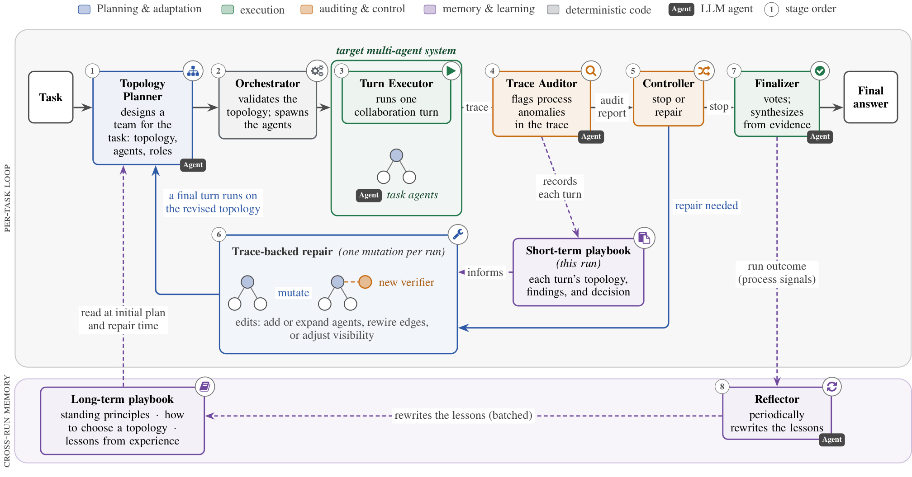
Figure 2 把控制流和学习流分成两层。正常路径是 Task 经过 Planner、Orchestrator、Turn Executor、Trace Auditor、Controller 和 Finalizer；若审计认为不需修复，Controller 直接停止并交给 Finalizer。若存在中高严重度的可修复异常，Controller 只开放一次 trace-backed repair，最后一轮在新 topology 上运行。紫色路径则说明记忆不等于答案标签：short-term playbook 记录本 run 每轮结构、发现与决定；run outcome 只以 process signals 进入 Reflector，再批量改写 long-term lessons。图中没有从 benchmark correctness 回流到 Planner 的箭头，这正是论文避免测试真值泄漏的关键限制。
Trace Auditor 的输入是结构化 artifact、tool record、relay packet、confidence、unresolved issues 与 evidence visibility。确定性扫描器先查 tool error cascade、branch collapse、unsupported impossibility、missing validator、premature consensus、duplicate state mutation、message compaction loss 等模式；开放式 Auditor 可以增加新 flag，但每条发现必须引用 trace 中的原文证据，中高严重度修复建议还要有至少两个不同引用。Auditor 判的是“协作过程是否显出危险症状”，不是“答案是否正确”，所以 clean 只能表示未发现已编码异常，不能当作正确性证明。
共享 agent harness 给在线循环加了若干确定性护栏：相同工具名与参数在同 stage 重复出现时复用旧结果；连续搜索得到相同结果集时转向读取或作答；同一工具连续失败会触发局部 circuit breaker；搜索后从未打开文档的 Agent 不能直接返回 blocked；超出 8 次工具迭代、超时或空输出时，系统强制一次无工具的 best-effort final call。旧工具迭代只保留摘要，最近 2 次保留原始消息，检索到的文档文本获得更高摘要预算。这些机制减少死循环，却也意味着 compaction policy 本身可能成为新的信息损失源。
2.3 有界结构变异：局部修复而非重做工作流
当 initial audit 给出 repairable flag 时，Planner 不是重新搜索完整 workflow，而是在当前 topology 的副本上返回一次 mutation。一般任务允许最多三个有序操作：增加一个 Agent、把某 Agent 展开为嵌套 group、改变 group pattern、增加或删除通信边、改变 context policy。确定性代码规范化参数并重新验证所有角色、引用、membership、nesting 与预算；无效提议进入保守 repair compiler 或被跳过。每个 run 最多发生一次 mutation，修复后只执行最后一轮，因此“在线自演化”在本文中是严格受限的局部修改，不是无穷递归自改写。
retrieval-heavy task 另有确定性 contraction：资源 guard 选择搜索调用最多的非 coordinator 分支，把活跃检索范围收窄到该 branch，而不再次询问 Planner。更普遍的 mutation 则依赖反事实信息增益原则；如果多个 Agent 已查询同一只读 API 且数据源没有返回信息，单纯复制更多相同 Agent 并不能修复缺失证据。Planner 应改变决策或上下文结构、添加真正独立的 verifier，或者返回空操作。bounded 的含义不仅是操作数少，还包括不改变任务接口、限制总 Agent 数、把状态变更集中到唯一 executor，并允许“没有可靠修复”这一结果。
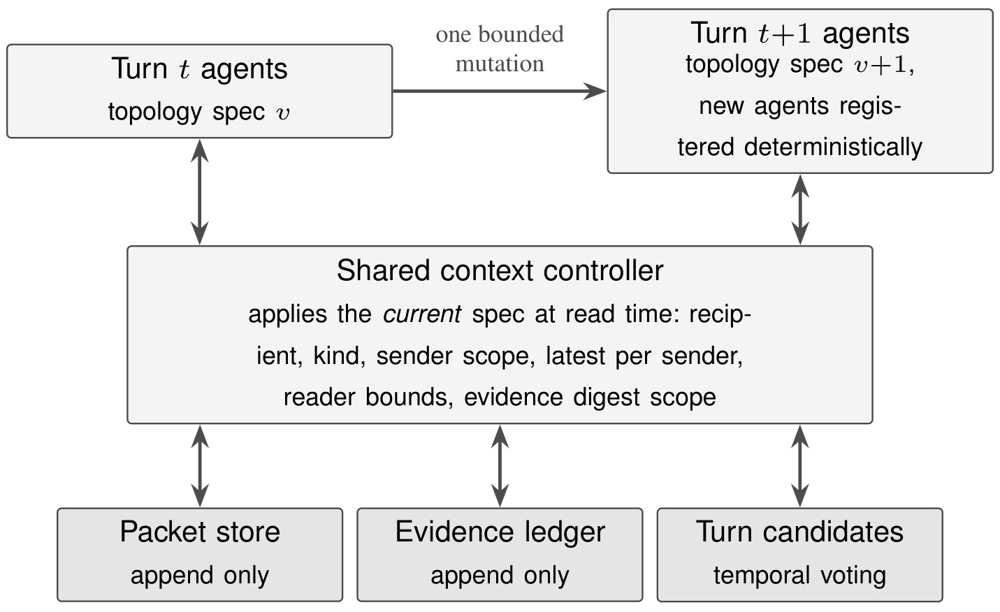
Figure 8 解释了 mutation 为什么不需要搬迁历史对话。Agent 在 stage 之间是无状态的，packet store、evidence ledger 与 turn candidates 三个仓库只追加不覆盖；shared context controller 在每次构造 prompt 时，根据当前 topology version 解析 recipient、packet kind、sender scope、最新 sender 消息与 reader bounds。系统从版本 v 指向 v+1 后，旧 packet 和证据仍留在原仓库，新 Agent 通过新策略读到允许的历史。Auditor 的一句修复建议会作为“不可信诊断”进入下一轮，Agent 必须重新核验；旧 turn 的最佳答案还保留为 temporal candidate，因此一次效果更差的 mutation 不能直接覆盖此前更好的候选。
2.4 双时间尺度 playbook：从本 run 记忆到跨任务经验
short-term playbook 是当前 run 的结构日志：它保存每轮 topology、Auditor flags、建议 mutation 和 Controller 决策，使 Planner 在 repair 时知道哪些结构已经试过、发生过什么症状，而不是只看最新候选。long-term playbook 则是一份会被 Planner 在初始规划与修复时全文读取的 topology planning skill。其 standing principles 与 topology choice 部分受保护，Reflector 主要根据一批近期 run 的过程摘要增删 lessons from experience。
反思标签只有两类过程信号：是否出现 flag，以及执行是否达到 decision-grade consensus；benchmark ground truth 从不进入更新。论文实验后形成的经验包括：tool-less reasoning 中 voting/3 和 voting/4 的过程表现比 singleton 或简单 debate 更干净；过度复杂 topology 容易触发 message compaction loss；高精度任务需要显式 validator；外部写、发送、支付等状态动作必须集中到一个 executor。这里没有可学习权重，也没有训练目标。本文没有可复用的核心公式：逐页检查主文与附录，没有编号方程、损失函数、概率模型或优化目标，核心贡献以 topology schema、JSON artifact contract、确定性 guard、预算上限和 mutation operator 表达。因此复现重点应放在状态不变量、可见性解析和审计证据约束，而不是寻找一个被省略的数学目标。
3. 实验结果
3.1 五个 benchmark 的总体表现
实验使用 Gemma 4 31B，reasoning effort 设为 medium。每个 benchmark 抽取 30 个问题，每项实验做三次独立运行；多 Agent 方法使用相同最大 Agent 数和可比 inference budget。五个任务覆盖不同协作压力：BrowseComp 测多步检索与证据综合，StableToolBench 测外部工具选择与执行，PlanCraft 测长程依赖规划，WorkBench 测现实多步 workflow，MATH 则检验纯结构化推理。baseline 包含 single-agent reasoning、六种固定 MAS，以及 AFlow、ADAS、AgentSquare、MASS 四类自动设计方法。
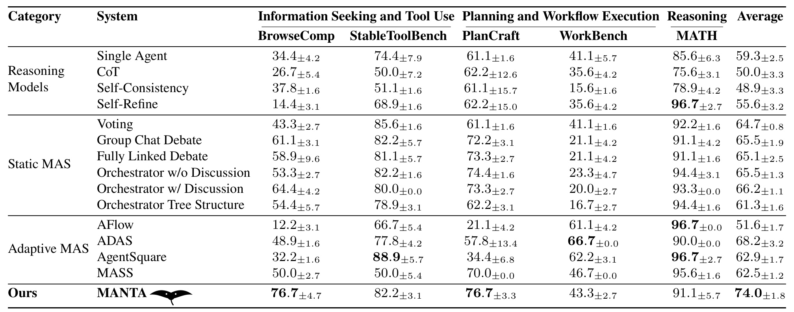
Table 1 中 MANTA 在 BrowseComp、StableToolBench、PlanCraft、WorkBench、MATH 上分别得到 76.7、82.2、76.7、43.3、91.1，平均 74.0。平均最强 baseline 是 ADAS 的 68.2，因此领先 5.8 个百分点；MANTA 也在所有五项上超过 Single Agent，但不是每列都最好：StableToolBench 的 AgentSquare 为 88.9，WorkBench 的 ADAS 为 66.7，MATH 多个方法达到 96.7。MANTA 真正成立的结论是跨任务平均最稳、在 PlanCraft 并列最佳，而不是统治每个数据集。三次运行的标准差也提示不确定性，例如 MANTA 的 MATH 为 91.1±5.7，不能把单个均值解释为确定性优势。
3.2 初始规划、mutation 与 playbook 的消融
作者在 BrowseComp、StableToolBench、PlanCraft、WorkBench 四个 benchmark 上做组件消融。该设置把平均成功率和平均 token 放在一起，因而能区分“性能下降”和“只是少算了”。此外，mutation budget 从 0 增到 3 的曲线显示第一轮修改获取大部分收益，后续预算主要覆盖更难实例；这也支持正文采用每 run 一次 mutation 的保守实现，而不是反复重写拓扑。
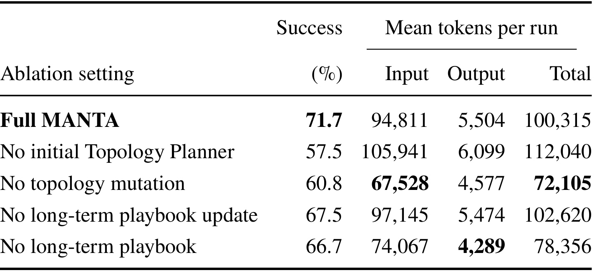
Table 2 的完整 MANTA 为 71.7。去掉 initial Topology Planner 后降到 57.5，且总 token 反而升到 112,040，说明一个差的初始组织会让后续协作更贵；禁止 topology mutation 得到 60.8，虽然 token 降至 72,105，却损失 10.9 点成功率。保留旧 playbook 但停止更新为 67.5，完全不用 long-term playbook 为 66.7，两者均低于完整系统但差距小于前两项。证据因此支持“初始规划贡献最大、在线修复次之、长期经验提供额外增益”，却不能证明 playbook 是绝对必要条件；其边际收益约 4 至 5 点，还要与批量反思成本一起衡量。 同一表中的成本变化还提醒我们，消融并不是固定计算量下的纯因果实验，因此成功率差应与实际执行路径一起解释。
3.3 long-term playbook 的迁移
transfer 实验把 mutation budget 设为 0，刻意隔离初始 topology 选择中的经验作用。source benchmark 的 playbook 被用于 target benchmark，比较转移前后的成功率；前值取三次运行的中位数。这样测到的不是在线 repair，而是积累的结构规则能否在没看目标任务反馈时改善开局。
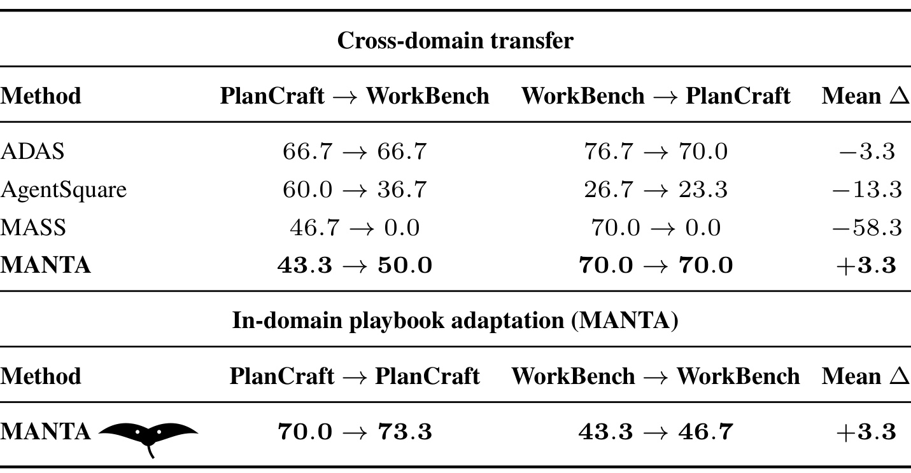
Table 3 显示，MANTA 从 PlanCraft 迁到 WorkBench 时由 43.3 升至 50.0，从 WorkBench 迁到 PlanCraft 时保持 70.0，跨域平均 +3.3；同域的 PlanCraft 与 WorkBench 分别由 70.0 到 73.3、43.3 到 46.7，也平均 +3.3。相对地，ADAS 为 -3.3，AgentSquare 为 -13.3，MASS 为 -58.3。作者的解释是 playbook 存的是“何时使用何种 topology、观察到什么故障”，比固定 workflow 更容易迁移。我的判断是该结果方向很有启发，但只有两个相邻规划/workflow 域、每格样本有限，尚不足以证明对任意新域都稳定正迁移。
3.4 token 成本的正确读法
多 Agent 自适配的成本必须分 online inference 与 offline design。静态 MAS 没有离线搜索，却可能让许多 Agent 每次都完整对话；AFlow、ADAS、AgentSquare、MASS 先付 workflow 搜索或验证成本，再用固定结构执行。MANTA 没有离线项，但每个 run 内含 meta-agent 的规划、审计与可能修复，因此其在线 token 不能与 single agent 混为一谈。
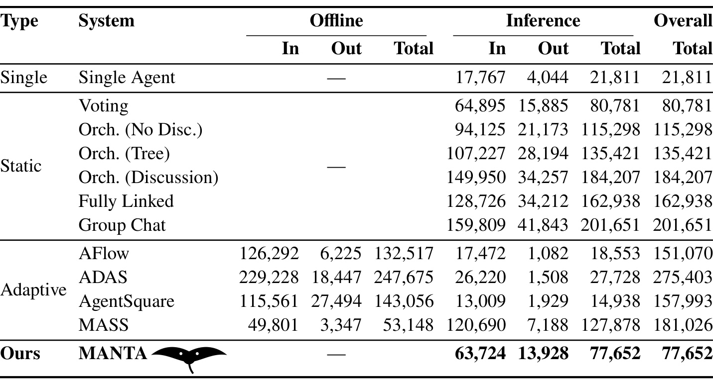
Table 4 中 MANTA 每 run 使用 77,652 tokens，其中 meta-level 为 9,416、inner-agent 为 68,236。它略低于最省的静态 MAS Voting 80,781，并显著低于 Group Chat 201,651；但 Single Agent 只用 21,811，MANTA 约为其 3.56 倍。自动设计方法的 overall 成本更高，如 ADAS 275,403、MASS 181,026，不过其中包含可摊销的 offline 成本，部署规模不同会改变比较。合理结论是 MANTA 在受测多 Agent 方法中具有较好的在线成本控制，而不是“比单 Agent 便宜”；论文也没有报告端到端 wall-clock latency，真实工具等待和串行 repair 的延迟仍未知。
3.5 trace 中的五种局部修复
案例分析最能说明 topology evolution 不等于“多加 Agent”。五个 repair 中只有 branch expansion 让系统明显变大；其余修改验证责任、执行顺序、通信连边或 stage role。每次图示都从 trace 中可见的问题出发，并只改变与该问题相关的结构。
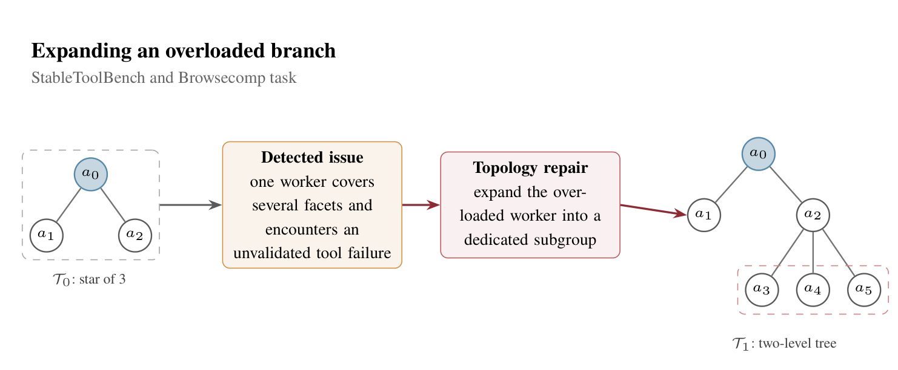
Figure 3 对应 StableToolBench 与 BrowseComp 的多侧面检索任务。初始 T0 是三节点 star，某个 worker 同时覆盖多个 facet，又遇到未经验证的工具失败；MANTA 没有重做整个团队，而是把该 worker 展开为以其为 hub 的三人 subgroup，形成 T1 两层 tree，另一条无关分支保持不变。这个 repair 的信息增益来自重新分配过载 branch 内的证据搜集与检查，而非让所有 Agent 重复搜索。它也暴露一个边界：若工具源本身不返回数据，扩大同质子组不会产生新证据，因此检索任务还需要资源 guard 判断应该 contraction 还是 expansion。 图中保留 a1 分支而只展开 a2，也证明 mutation 的作用域由 audit 指向的故障位置约束。
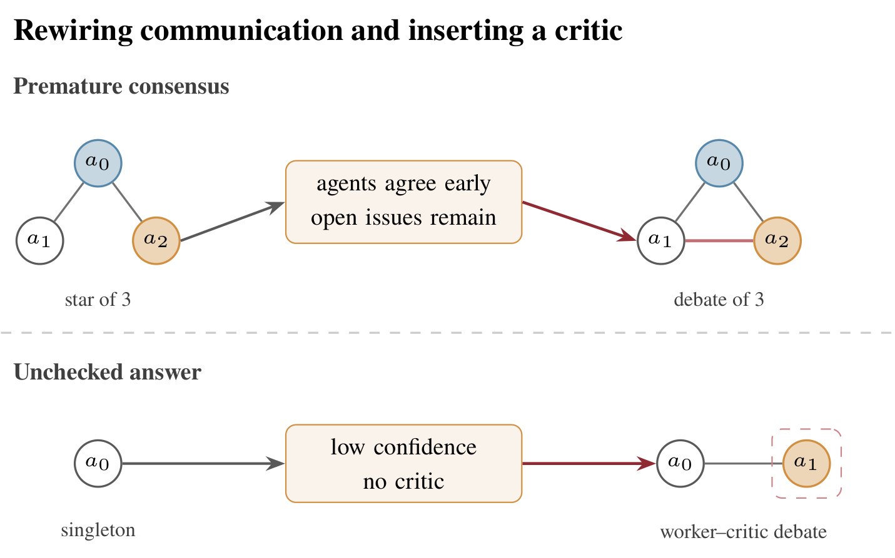
Figure 6 的上半部分处理 premature consensus：三人 star 中 Agent 过早同意、开放问题仍存在，修复不增加节点，只补缺失通信边，把结构改成 fully connected debate，让不同分支能够直接挑战彼此。下半部分处理 unchecked answer：singleton 给出低置信答案却没有 critic，系统插入一个独立检查者，变成 worker–critic debate。两例表明同一个“答案可疑”表象可以指向不同结构原因：前者缺少横向信息流，后者缺少角色分离。若 Auditor 只输出泛化的“再检查一次”，Planner 就无法选择正确 operator。 高亮部分只标出新增连边或 critic，因而能直接核对 repair 是否保持了最小改动原则。
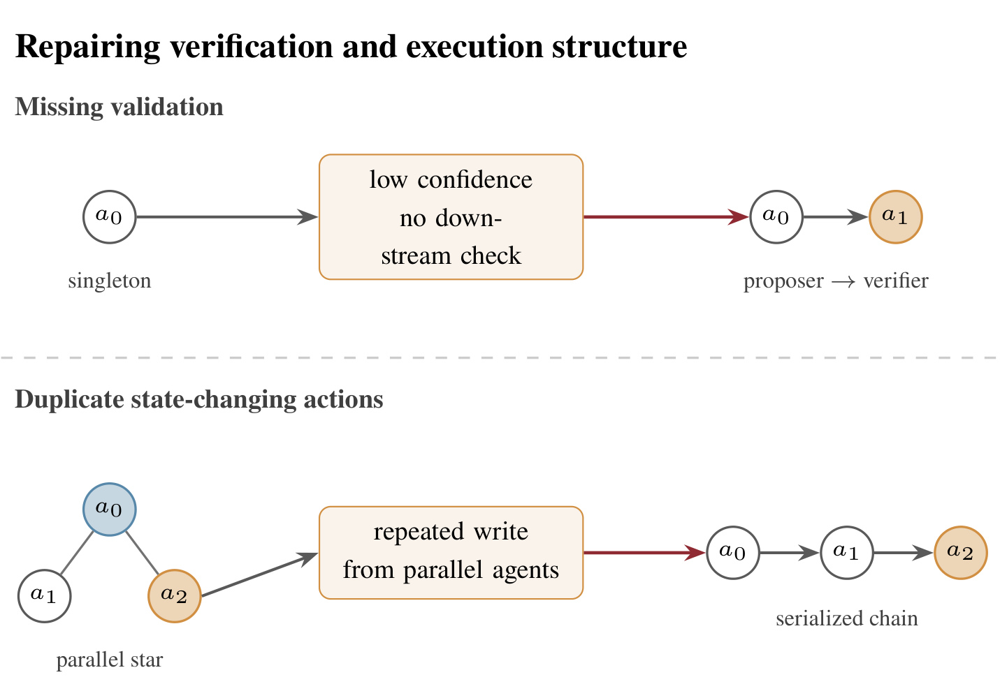
Figure 5 上半部分把低置信、无 downstream check 的 singleton 改成 proposer→verifier 链，明确谁生产、谁核验；下半部分发现 parallel star 中多个 Agent 重复执行外部 write，于是把三个节点排成 serialized chain，确保状态 mutation 只有一个执行顺序。这里的价值不在更高并行度，而在把不可逆动作的责任收束。对真实 Agent 系统，这条原则比 benchmark 得分更重要：读取、规划与独立验证仍可并行，但发送、删除、支付、调度等外部变化若被多个分支重放，结构性错误可能造成超出答案质量的实际损失。 尤其是 serialized chain 牺牲并行吞吐来换取 exactly-once 行为，收益与代价都由结构变化明确呈现。
3.6 Auditor 到底能否识别错误
论文用全部 450 个 MANTA runs 检查 initial audit 与 benchmark correctness 的关系。这里把 benchmark-incorrect 当正类，但 Auditor 自己从未见到该标签；所以 precision、recall 与 F1 只评估“过程 flag 能否代理最终错误”，不是对人工标注的过程故障做监督检测。
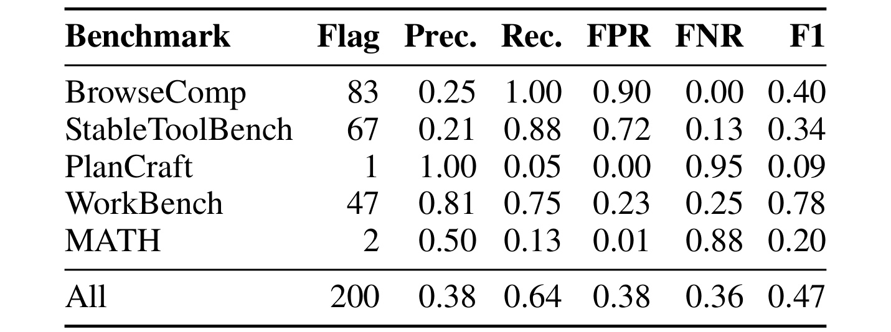
Table 8 的差异很大：WorkBench precision 0.81、recall 0.75、F1 0.78，说明现实 workflow 中可见过程异常与错误较一致；BrowseComp recall 1.00 但 precision 0.25，StableToolBench recall 0.88 但 precision 0.21，表示检索/工具轨迹极易触发假阳性；PlanCraft 只有 1 个 flag，precision 1.00 却因 recall 0.05 得到 F1 0.09。全体 precision 0.38、recall 0.64、F1 0.47，远低于单列最亮眼的 0.78。Table 9 进一步给出：无 repair flag 的 250 次中 208 次正确，即 83.2%；有 flag 的 200 次中 125 次正确，仍有 62.5%。clean 是有用置信信号，却绝不是 correctness certificate。
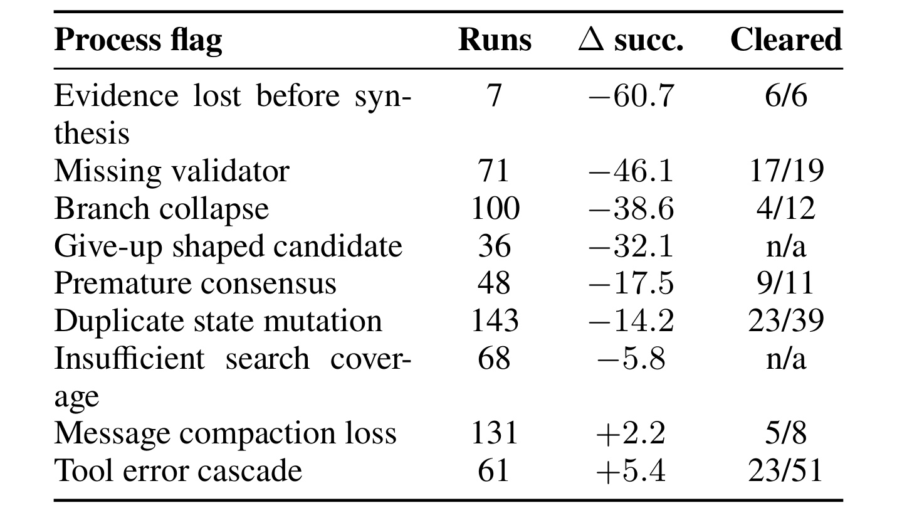
Table 10 把相关性细化到异常类型。evidence lost before synthesis 仅出现 7 次，却与无该 flag 的 run 相比低 60.7 点，且 6/6 个针对性 repair 后消失；missing validator 出现 71 次，差 -46.1 点，cleared 17/19；branch collapse 出现 100 次，差 -38.6 点，但只 cleared 4/12。duplicate state mutation 最常见，143 次、差 -14.2 点，cleared 23/39。message compaction loss 与 tool error cascade 反而呈 +2.2、+5.4，说明 flag 的出现频率和方向不能直接解释为因果。151 次 repair 中 92 次减少总 flag，27 次不变，32 次增加；系统能改善过程指标，但尚没有“若不修复会怎样”的 benchmark counterfactual。
4. 总结
MANTA 的核心贡献是把多 Agent 自改进的对象从输出、prompt、memory 和离线 workflow 推进到推理时的协作结构。它用可验证 topology specification 描述角色、群组、通信边和可见性；用 Planner 选择任务条件初始结构；用不接触真值的 Auditor 发现可观测异常；用每 run 一次、最多三操作的 mutation 做局部修复；再以 short-term 与 long-term playbook 分别保留本次执行和跨任务经验。五基准平均 74.0、相对最强平均 baseline +5.8 点，以及跨域 transfer +3.3 点，说明这一方向值得继续研究。
证据也要求保留四点限制。第一，Auditor 的总体 F1 只有 0.47，多个 Agent 一致犯错、证据本身错误或异常未进入 taxonomy 时可能完全不触发 repair。第二，MANTA 每 run 77,652 tokens，虽低于受测静态 MAS，却远高于 Single Agent，且论文没有完整延迟评估。第三，五个 benchmark 和每项 30 questions 仍是受控环境，真实组织中的长期权限、异步消息和不可逆动作更复杂。第四，long-term playbook 只从过程信号学习，可能积累领域偏差；“程序上干净”不等于“事实正确”，错误经验也可能被迁移。
后续最值得做的验证有三组：一是引入人工标注的 process-failure ground truth，把“异常是否真实存在”和“答案是否错误”分开评测，并报告 repair 的实例级 counterfactual；二是在更大团队、长时间运行、真实权限系统中测 token、wall-clock latency、失败恢复和唯一状态执行者约束；三是研究 playbook 的置信度、遗忘与负迁移检测，让低样本 lesson 不会永久支配 topology choice。若这些问题得到解决，MANTA 的意义将不只是一个更高分的 MAS，而是一套让 Agent 组织在运行中改变、又不牺牲审计性与状态安全的系统框架。